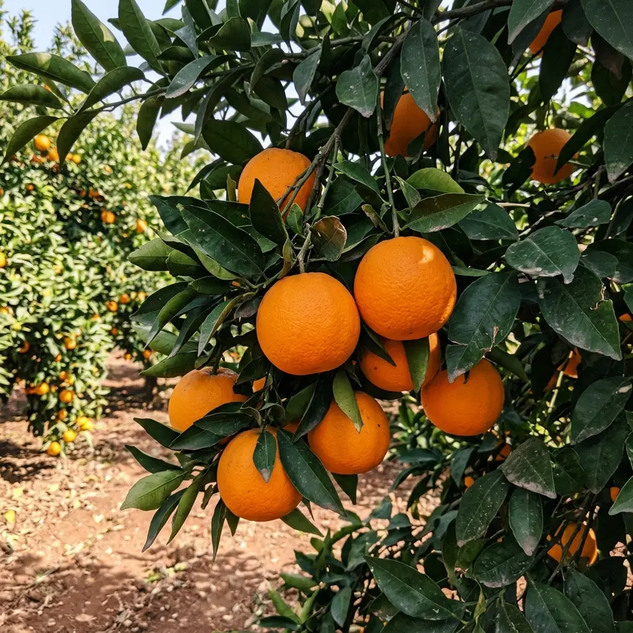
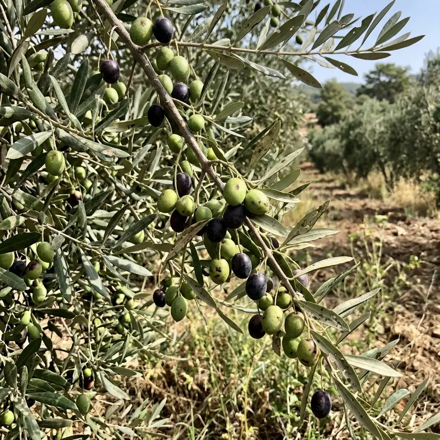
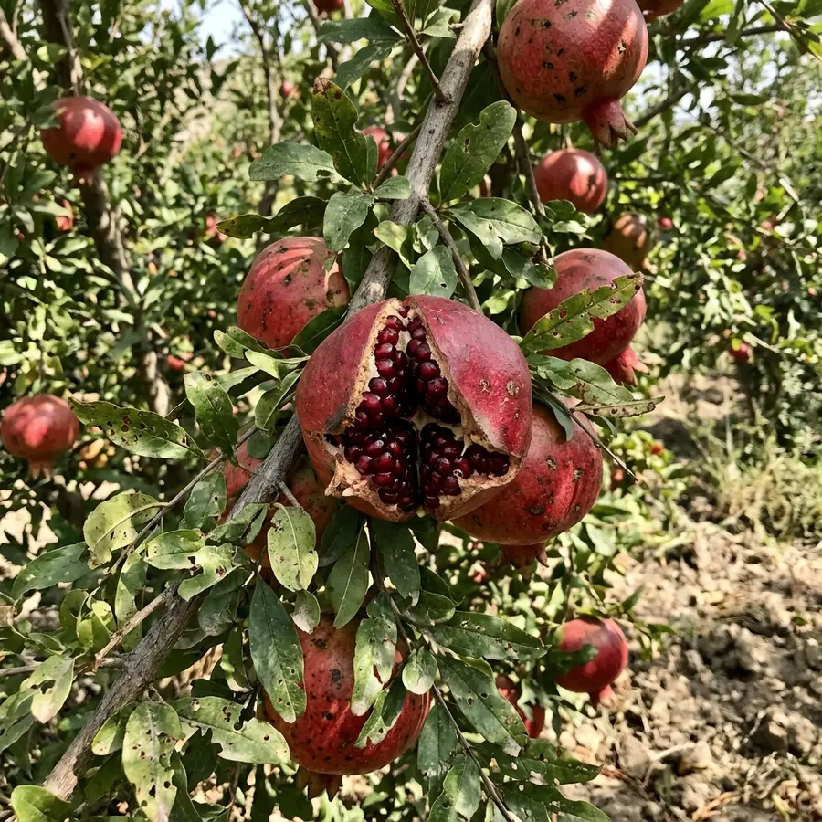
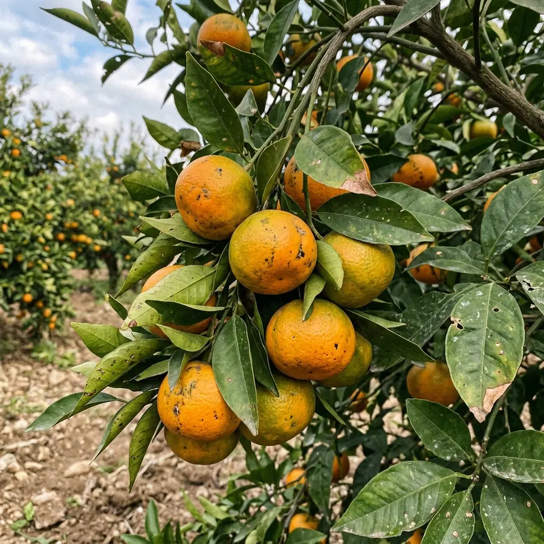
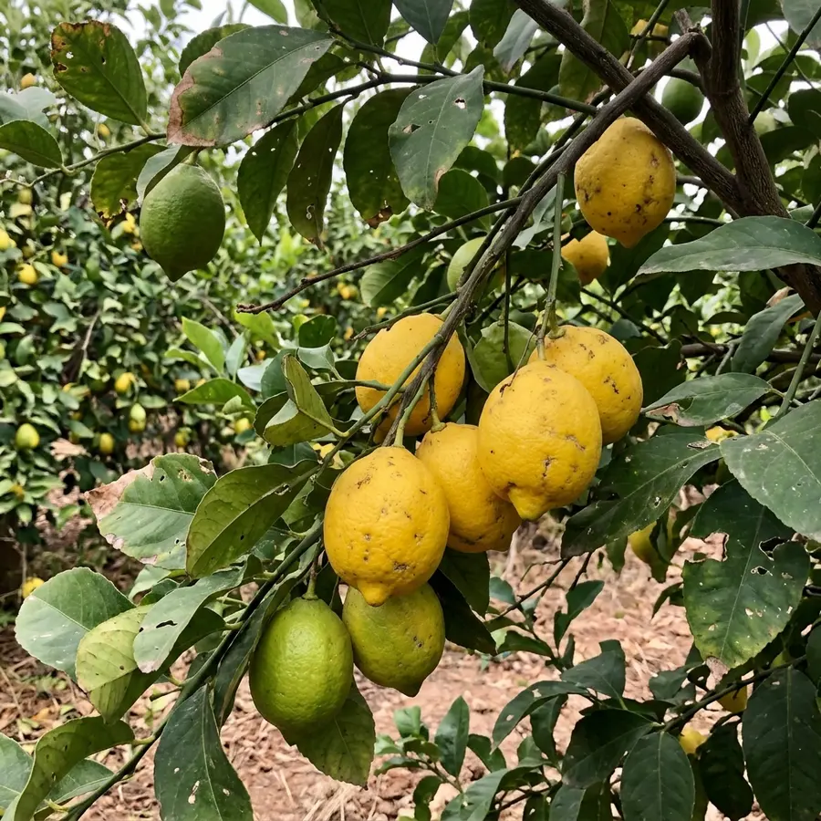
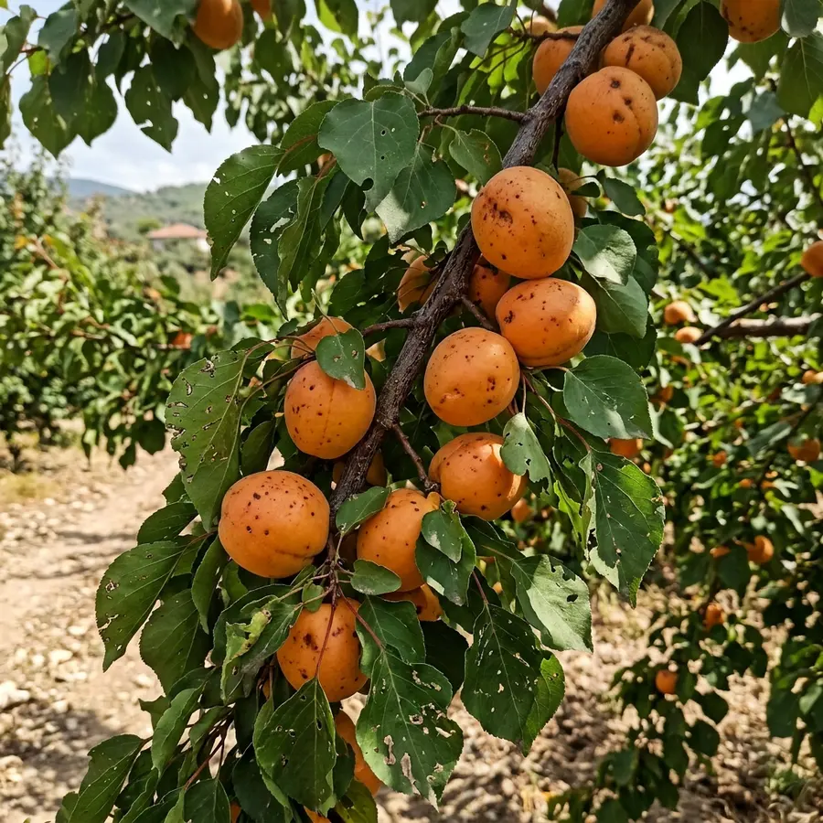
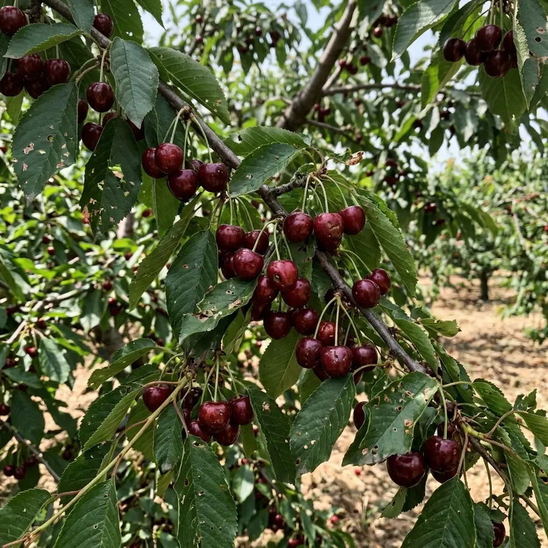

Sertifikalı Fidan
Turunçgil ve meyve fidanlarımızın tamamı sertifikalı olarak yetiştirilir.
Turunçgil, zeytin, nar ve meyve fidanlarını sertifikalı olarak yetiştiriyor; çeşidi belli, sağlıklı fidanları uygun fiyatla sunuyoruz.



Turunçgilden cevize, bölgenize ve amacınıza uygun türü seçin; her türün içinde tüm çeşitleri bulun.


Sağ Fidancılık, 2005 yılında Hatay'ın Samandağ ilçesinde, Fidanlı Mahallesi'nde kuruldu. Bölgenin bereketli toprağında başlayan bu yolculukta bugün turunçgilden cevize 17 meyve türünde, 100'ü aşkın çeşitte sertifikalı fidan yetiştiriyoruz.
Bir bahçenin ömrü, dikilen fidanla başlar. Bu yüzden aşı gözlerini yalnızca sağlıklı ve verimli ağaçlardan alıyor, turunç tohumlarını hastalık riskine karşı çeşitli işlemlerden geçiriyoruz. Amacımız; çiftçiye de bu işe yeni başlayana da çeşidi belli, sağlıklı fidan ulaştırarak kontrolsüz dikimden doğabilecek kayıpların önüne geçmek.
Fidanı teslim etmekle işimiz bitmiyor: hangi çeşidin toprağınıza ve iklime uygun olduğunu birlikte seçiyor, yeni bahçe kuranlara toplu sipariş teklifi hazırlıyoruz.
Kontrolsüz dikimden doğabilecek kayıpları önlemek için çeşidi belli, sağlıklı fidanlar yetiştiriyoruz.
Turunçgil ve meyve fidanlarımızın tamamı sertifikalı olarak yetiştirilir.
Aşı gözleri sağlıklı ve verimli ağaçlardan özenle seçilir.
Turunç tohumları hastalık riskini azaltmak için çeşitli işlemlerden geçirilir.
Toprağınıza ve iklime uygun çeşidi seçmenize yardımcı oluyoruz.
Tohumdan satışa kadar her aşama Samandağ'daki fidanlığımızda, gözümüzün önünde ilerliyor. Böylece hem çeşidin doğruluğundan hem de fidanın sağlığından emin oluyoruz.


Aradığınız cevabı bulamadıysanız bizi arayın; size uygun çeşidi birlikte belirleyelim.
Evet. Turunçgil ve meyve fidanlarımızın tamamı sertifikalı olarak yetiştirilir; aşı gözleri sağlıklı ve verimli ağaçlardan seçilir.
Bu; toprağınıza, iklime ve amacınıza (sofralık, kurutmalık, yağlık vb.) göre değişir. Bizi arayın, bölgenize en uygun çeşidi birlikte seçelim.
Fiyatlar çeşide, fidanın yaşına ve adede göre değiştiği için sitede yayınlamıyoruz. Aradığınızda güncel fiyat ve stok bilgisini hemen paylaşıyoruz.
Evet. Yeni bahçe kuracaklar için toplu sipariş teklifi hazırlıyoruz. Sayfanın üstündeki “Teklif İste” formunu doldurabilir ya da çeşit ve adet bilgisiyle bizi arayabilirsiniz.
Samandağ yolu üzerinde, Fidanlı Mahallesi, Samandağ / Hatay'dayız. Gelmeden önce arayıp haber verirseniz sizi bekleriz.
Fidan çeşitleri, stok ve fiyat bilgisi için bizi arayın; size uygun çeşidi birlikte seçelim.